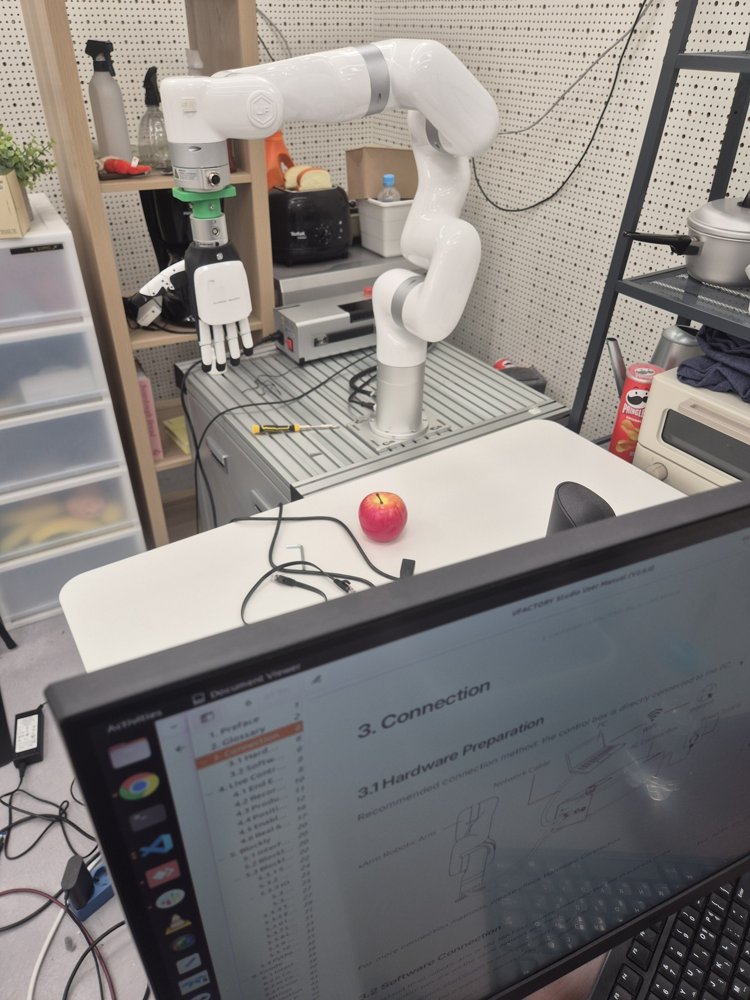
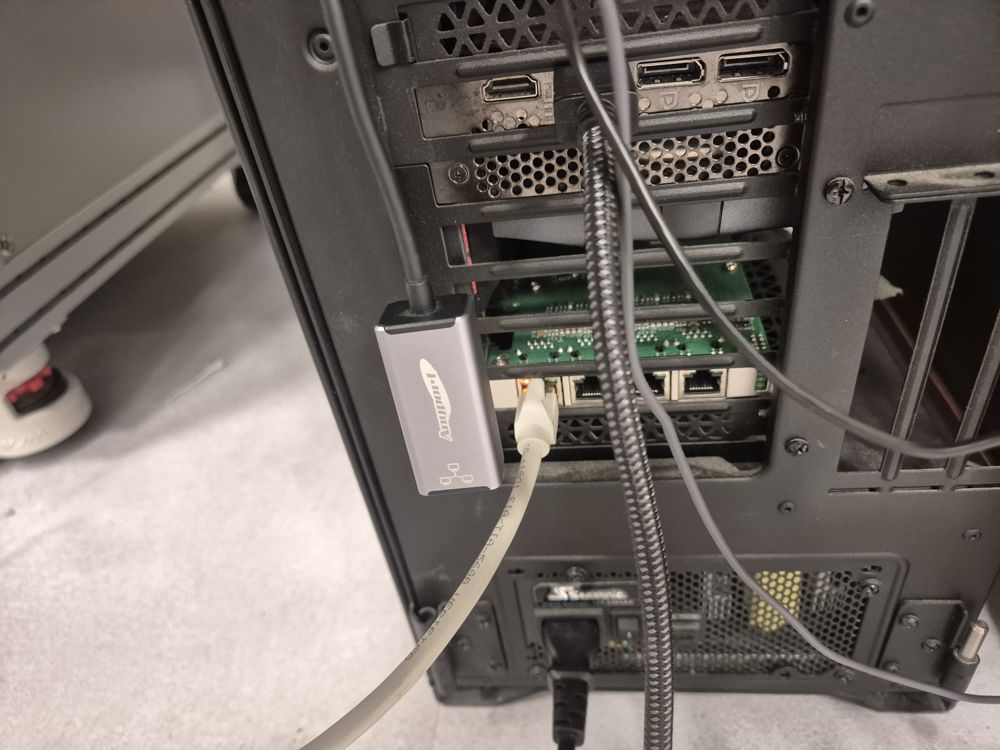
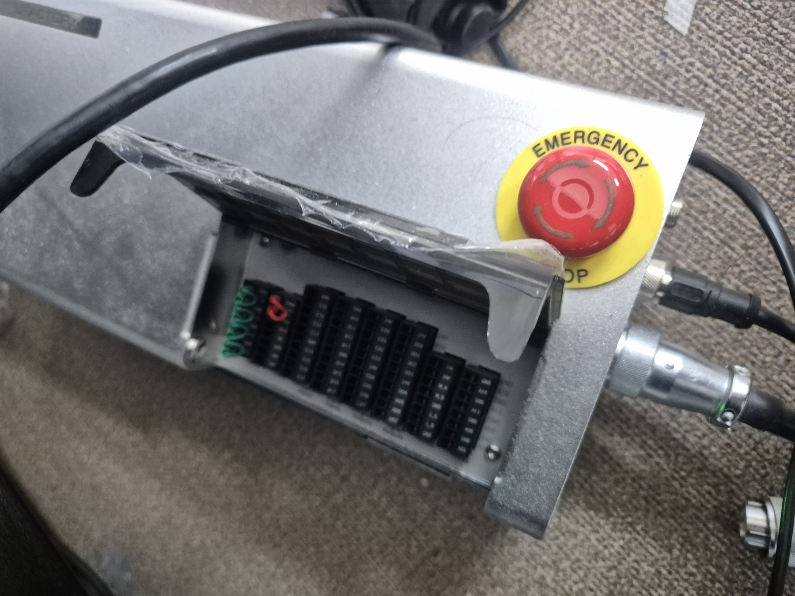
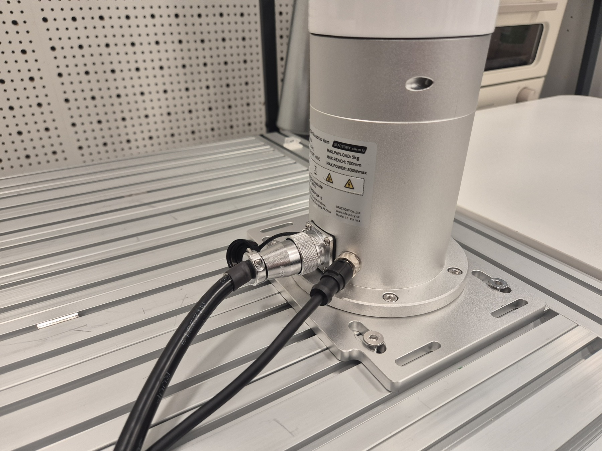

ISSUE-001 · 해결 · 2026-07-27
케이블은 연결됐는데, 왜 로봇은 보이지 않았을까?
xArm 컨트롤러와 PC를 직접 Ethernet으로 연결했고 물리 링크도 살아 있었지만, 로봇 주소로 통신할 수 없었다. 로봇을 재설정하기 전에 연결 문제를 물리 계층과 네트워크 계층으로 분리해 확인했다.
결론: 로봇이나 케이블의 고장이 아니라 PC 유선 인터페이스의 IPv4·라우팅 설정 문제였다. 같은 서브넷의 고정 주소를 설정한 뒤 ARP, ping, 제어 포트, UFACTORY Studio까지 단계적으로 확인했다.
1. 관측한 증거




- 유선 인터페이스는 link up, carrier 감지 상태였다.
- 초기 ping은 실패했고 ARP 항목도 만들어지지 않았다.
- 따라서 케이블 단선보다 PC가 로봇 서브넷으로 패킷을 보내지 못하는 경우를 우선 의심했다.
2. 진단 방식
문제를 한 번에 해결하려 하지 않고 물리 링크, 호스트 주소, 경로, ARP 응답, 제어 포트 순서로 좁혔다. 이 순서는 장비를 불필요하게 재부팅하거나 설정을 바꾸지 않고 원인을 분리하게 해준다.
3. 조치
활성 유선 연결에 로봇 서브넷용 수동 IPv4 주소를 지정하고 기본 인터넷 경로로 쓰이지 않도록 설정했다. 무선 네트워크는 로봇 주소와 경로가 충돌할 수 있으므로 진단 중에는 분리해 확인했다.
유선 연결 프로파일을 수동 IPv4로 설정 → 로봇과 동일한 /24 서브넷의 다른 주소 사용 → 대상 로봇 주소의 route가 유선 NIC인지 확인 → ping과 ARP 재검사
4. 검증 결과
| 검사 | 결과 |
|---|---|
| ARP | 컨트롤러의 Ethernet 응답을 확인했다. |
| ping | 연속 요청이 손실 없이 응답했다. |
| 제어 포트 | 로봇 제어용 TCP 포트가 열려 있음을 확인했다. |
| UFACTORY Studio | 연결 후 로봇 제어가 가능함을 확인했다. |
5. 이후에 남은 일
연결 성공은 조작 파이프라인의 시작일 뿐이다. 실제 M0 실험에는 카메라 열거와 보정이 필요하며, 그 상태는 ISSUE-002에서 관리한다. 실행 코드 통합과 GPU 환경은 ISSUE-003에 연결된다.